This is Emma, we found her on the street Gorai (Mumbai) in early January 2023. She must have been 1-2 months then, she was too frail, her fur was full of fleas and she was dragging herself on her forelegs. Her right hind knee was broken and she couldn't put weight on it, she had injury on her back and flesh was exposed at the end of her tail. She'd probably been in an accident; the vehicle'd probably injured her leg and a part of her back. She was in pain and scared, she wasn't responding to us. She had given up.
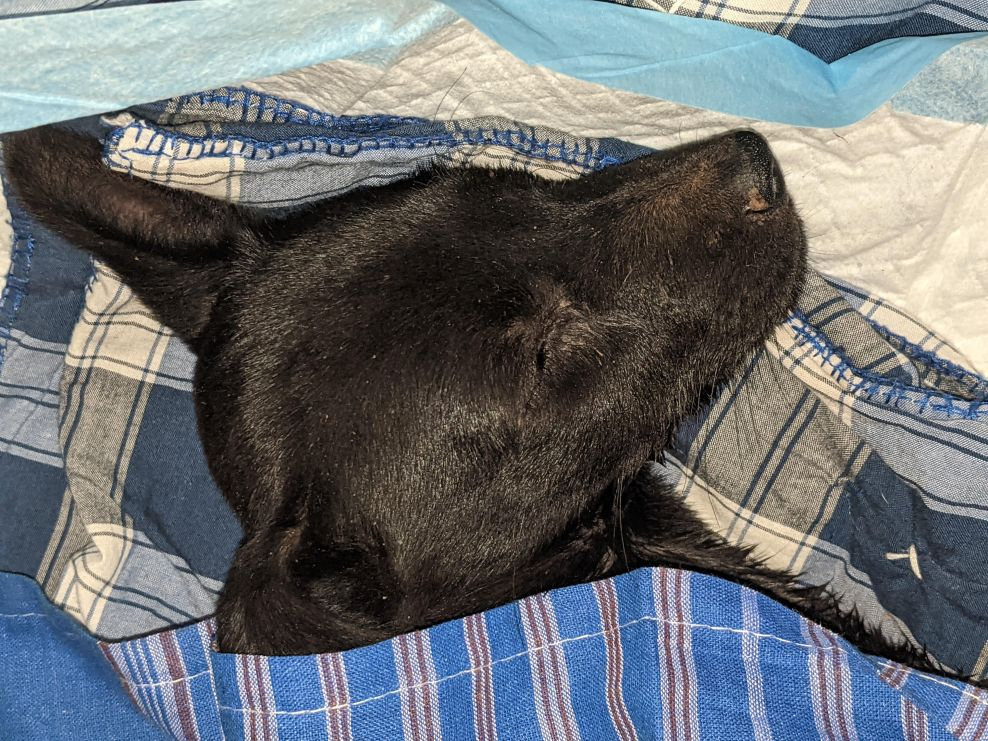We got her home, tried to feed her. She would not, she would just sleep. Next day we took her to the vet. Her hemoglobin was critically low, the flees had drained her blood. Since she'd likely not been eating, her poop was stuck inside. Her lymph nodes were enlarged. The vet also suggested immediate surgery for her knee. Dr. Drona Pail, Sewri, performed the surgery, he inserted 3 metal pins in her leg to attach the fibula/tibia to her knee. The pins were to be removed in 3 weeks. She was weak and low for a day after the surgery. The next day she ate, and in a few hours pooped, which brought us tremendous relief - she was gonna make it.
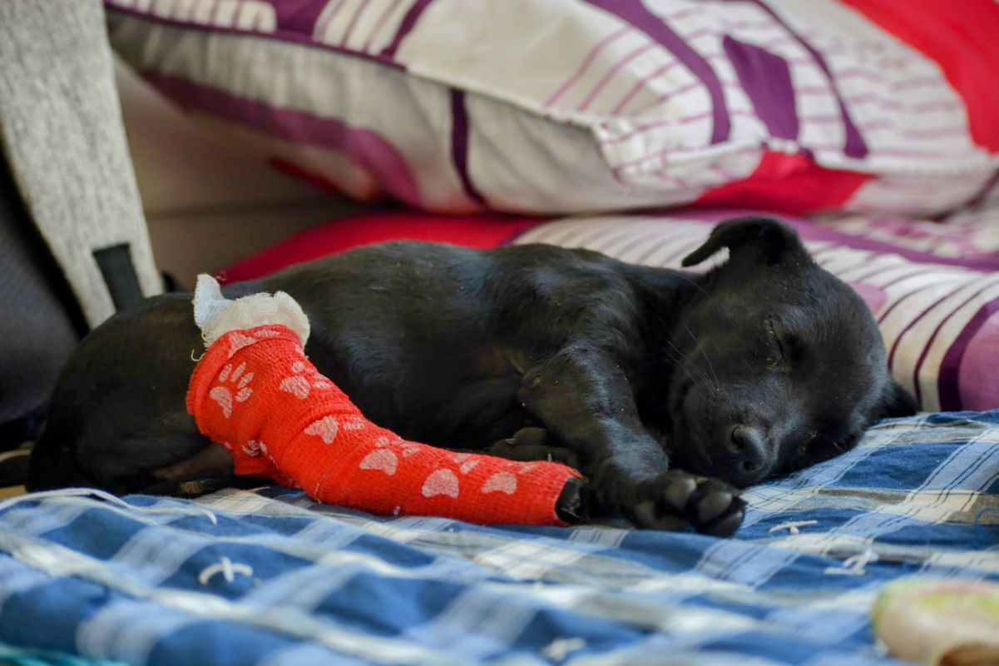 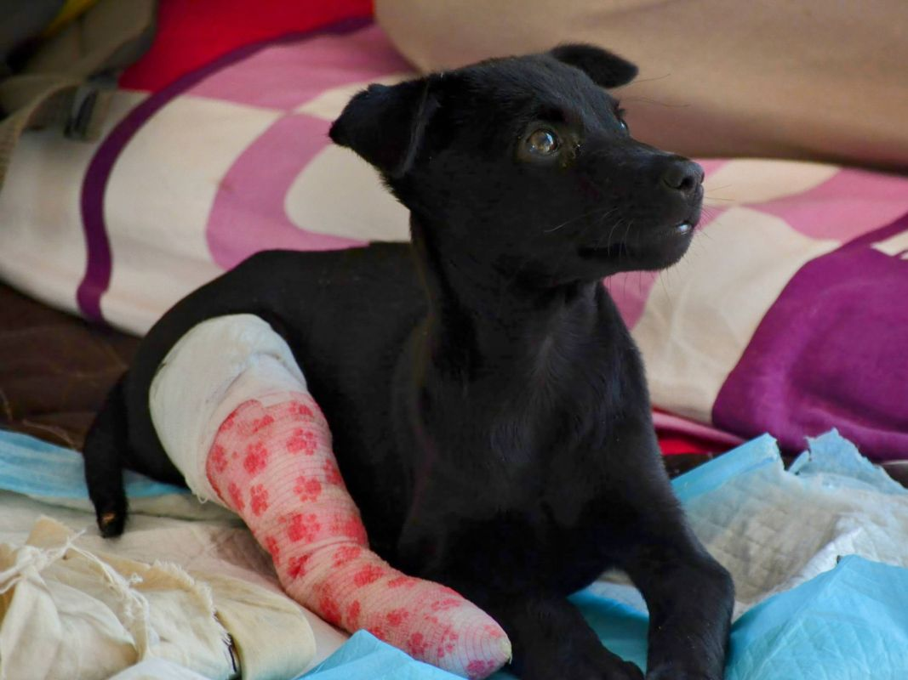Her recovery seemed quick. She was a picky eater but loved to eat. She somehow knew that she was supposed to pee and poo on the pad, and she'd make sure she limps to the pad to finish her business. She pooped 5 dead worms in a day the day after she got her first deworming. There was progress. As she gained strength her large droopy ears stood upright - vertical, she had German Shephard ears.
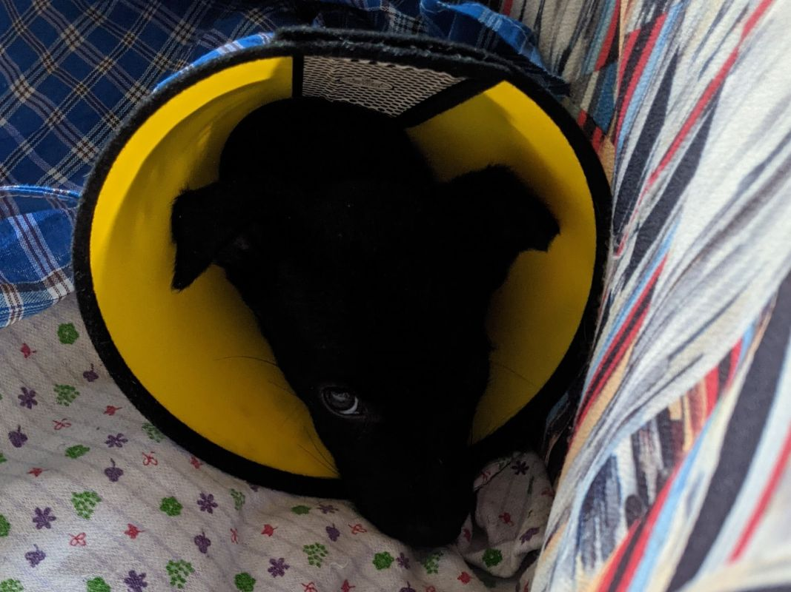 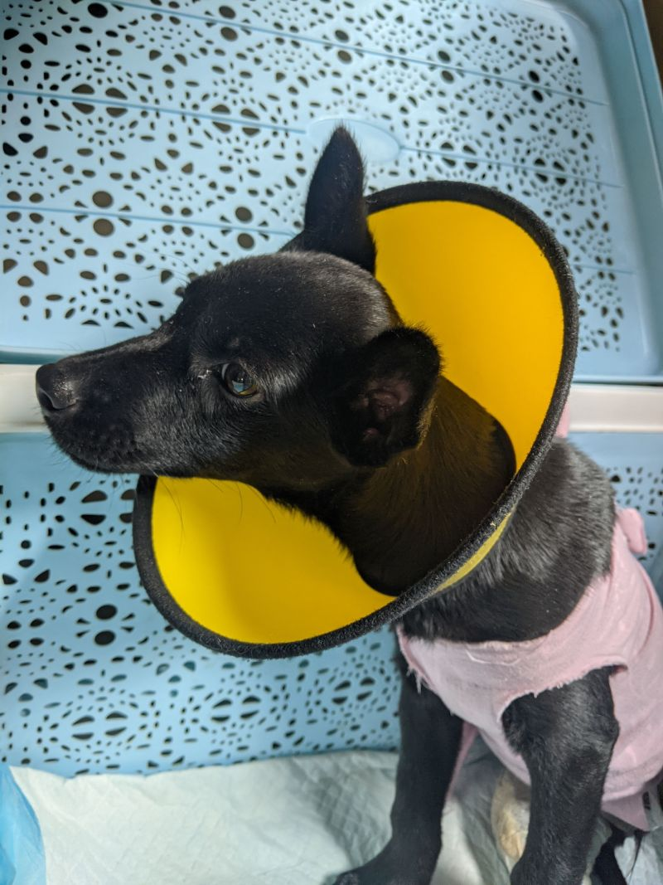A week later we noticed a lot fluid filling up in her back, along her spine between her ribs and her hips. Abscess was building up at the site of injury and it needed to be drained and cleaned daily for two weeks, and it'd have been better in four. She'd be a sport at the vet, she'd greet whoever passed our way with a wag and pointy ears and let the vet do their job without a fuss. She has a great temperament.
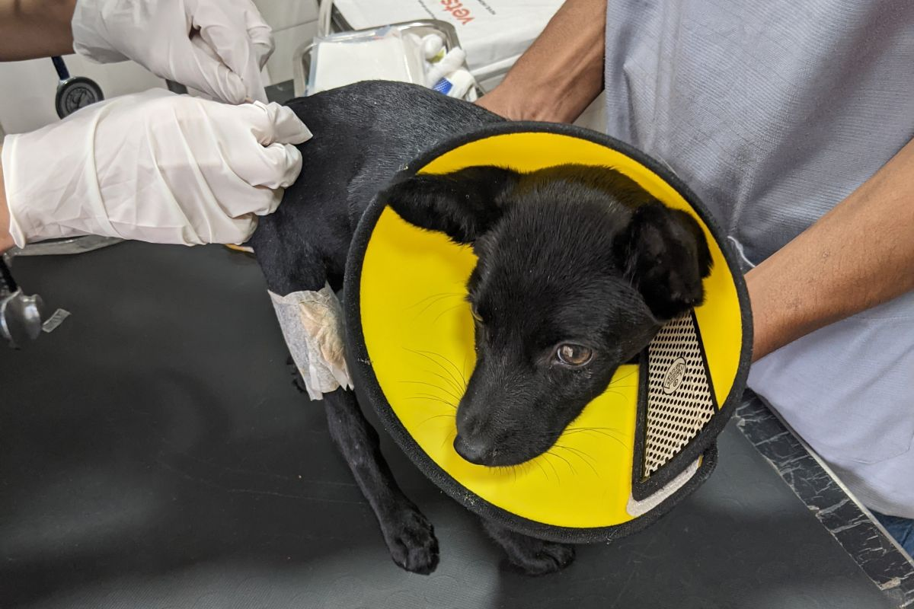 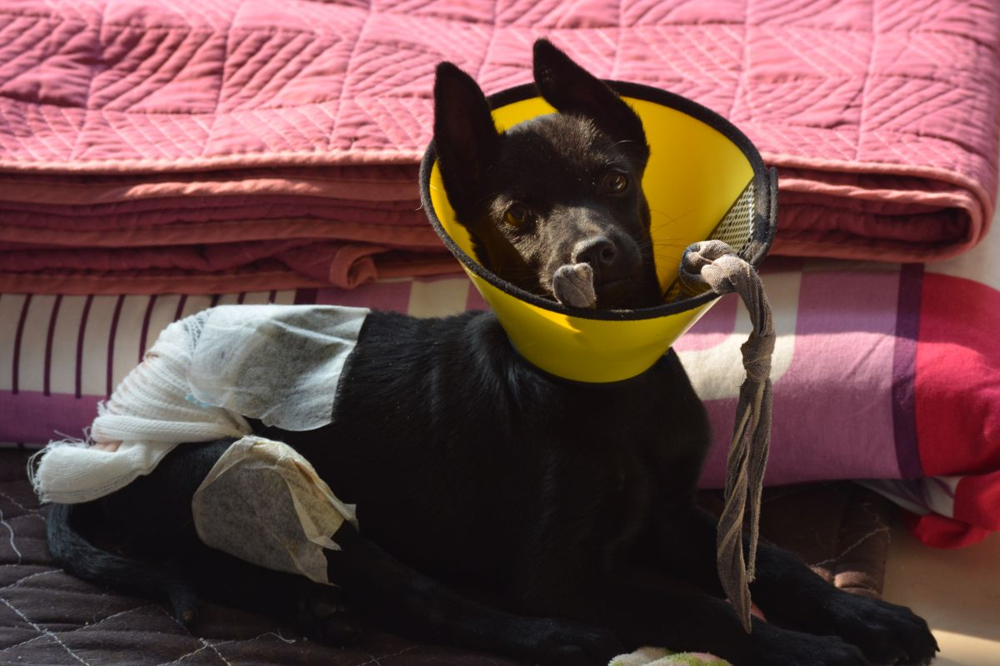 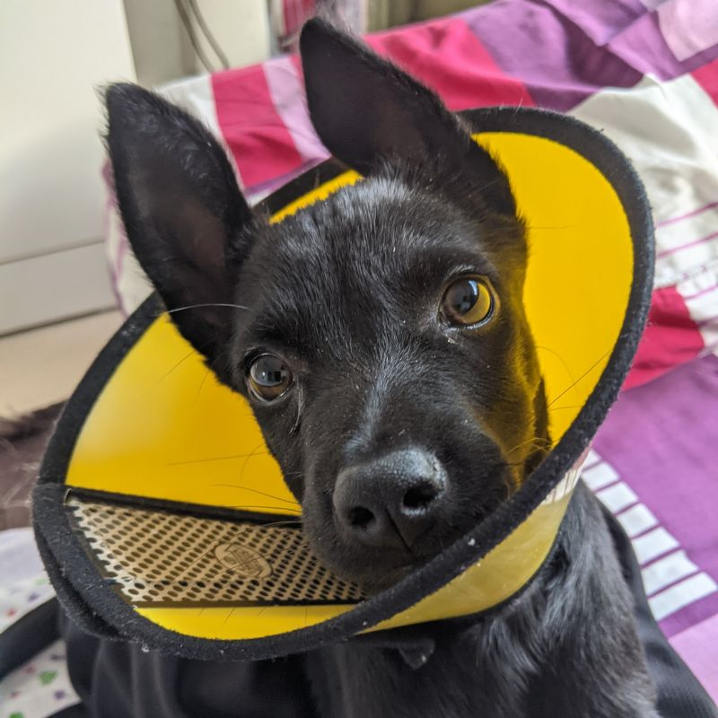 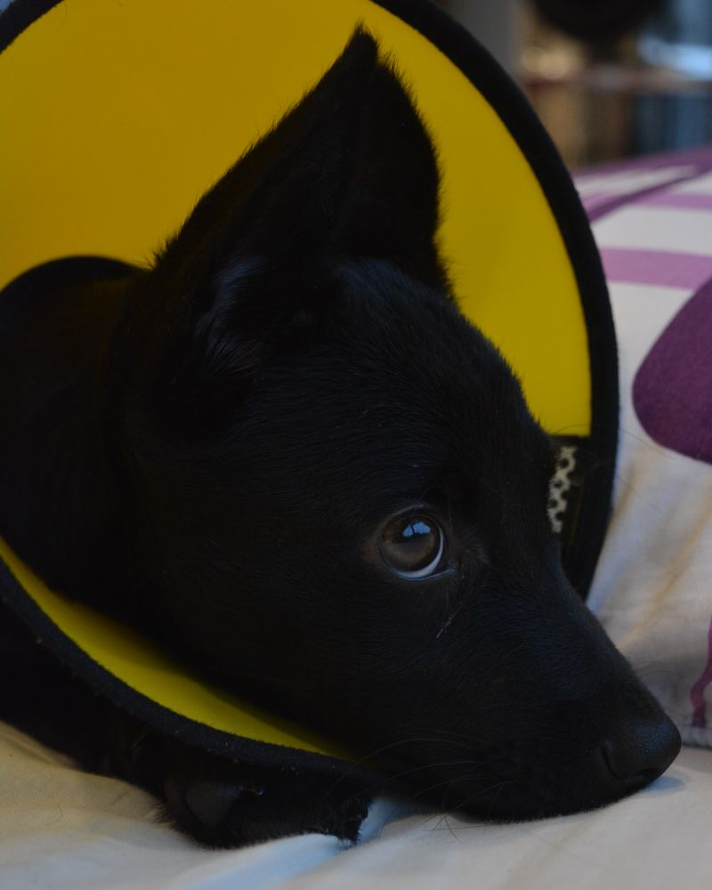In the last week on January, we got the pins removed, she was doing great, another week of strict rest and that's it. She got her first vaccination shot. Her back's progress was encouraging. She finally got to meet our 18month old dog, Eva and both of them were curious and gentle. She loved running around the apartment and Eva would follow her. Also, we finally got a response from someone interested in adopting her. We were all set. Then it happened.
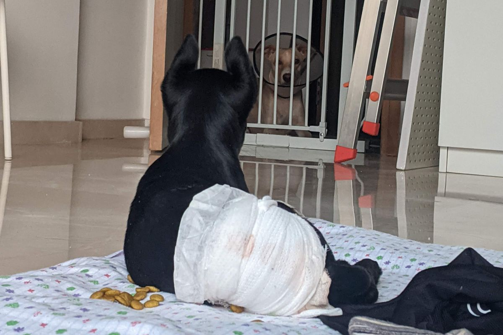 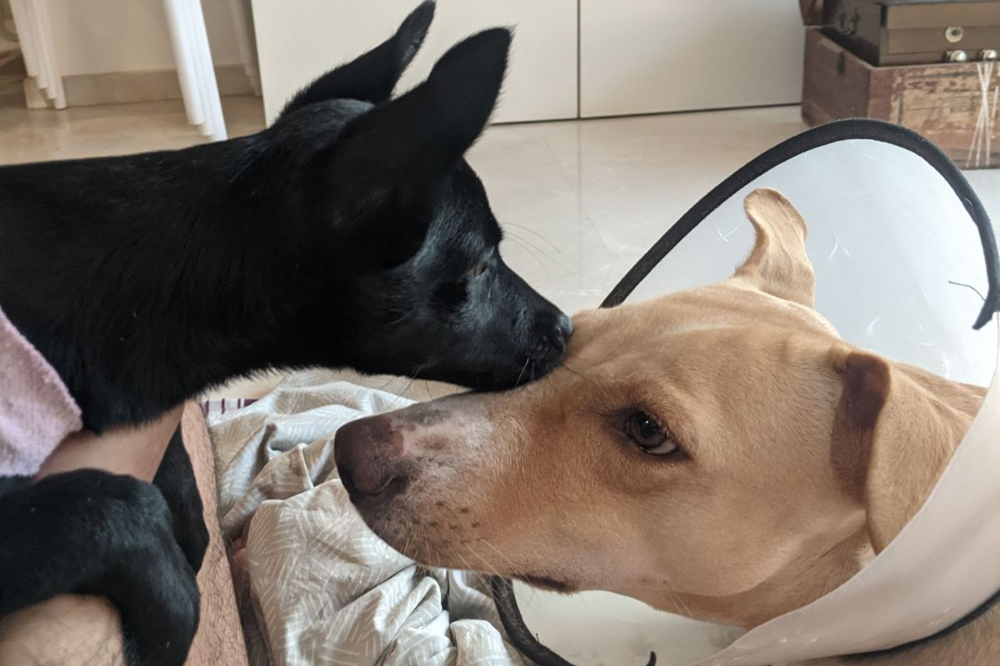She got Parvo. From what we understood, Canine Parvovirus eats the intestine lining making it difficult for the dog to absorb food/water which leads reduces speed for the lining to build back up before the immune system destroys the virus leading to death, usually due to electrolyte imbalance and other infections catching up due to weakened immunity. Parvo is highly contagious so Eva'd have to stay out of the apartment till Emma's done with and we've bleach cleaned all the places Emma has touched, parvo doesn't deactivate easy. We'd have to inject fluids twice daily since nothing Emma ingested orally stayed for more than a few minutes, she'd either puke or diarrhea. She lost half her weight in 2 days. She couldn't eat. The ears went back down. The diagnostics numbers remained hopeful. She was gonna give a fight.
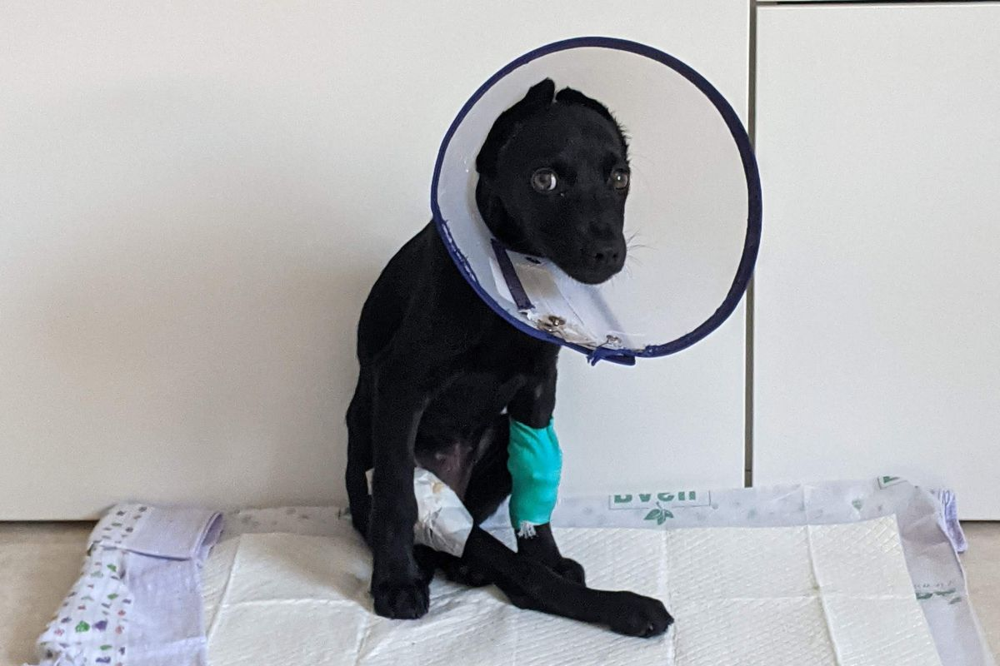 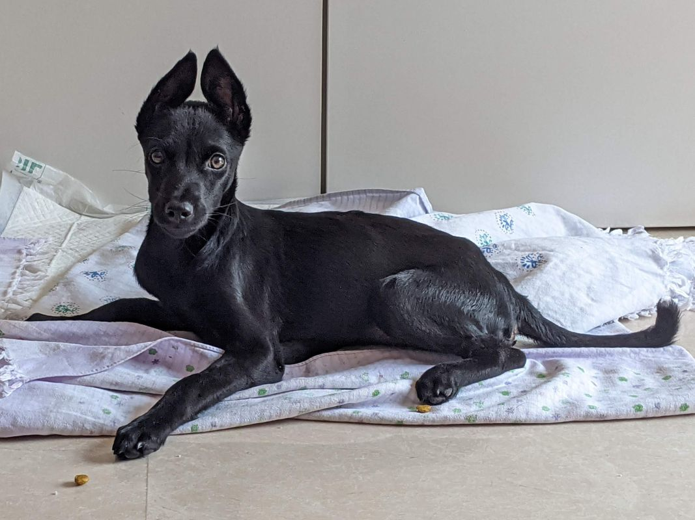It took a week, IV twice a day, little to no food orally initially, then a little with a poop binder and strong anti-vomit meds, then IV once a day with oral meds and then to normal eating and drinking. In two weeks she had recovered. The virus had lost, but was still contagious so the isolation would continue for another week. She made it.
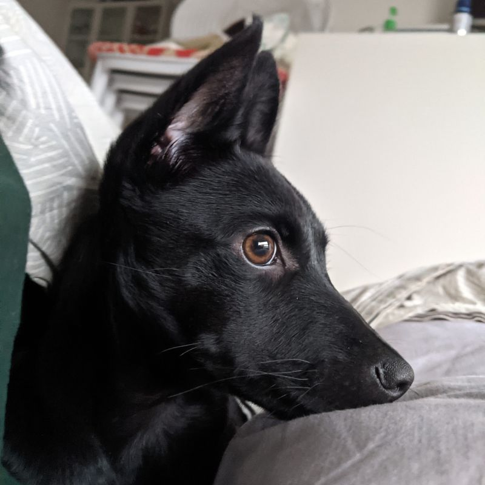 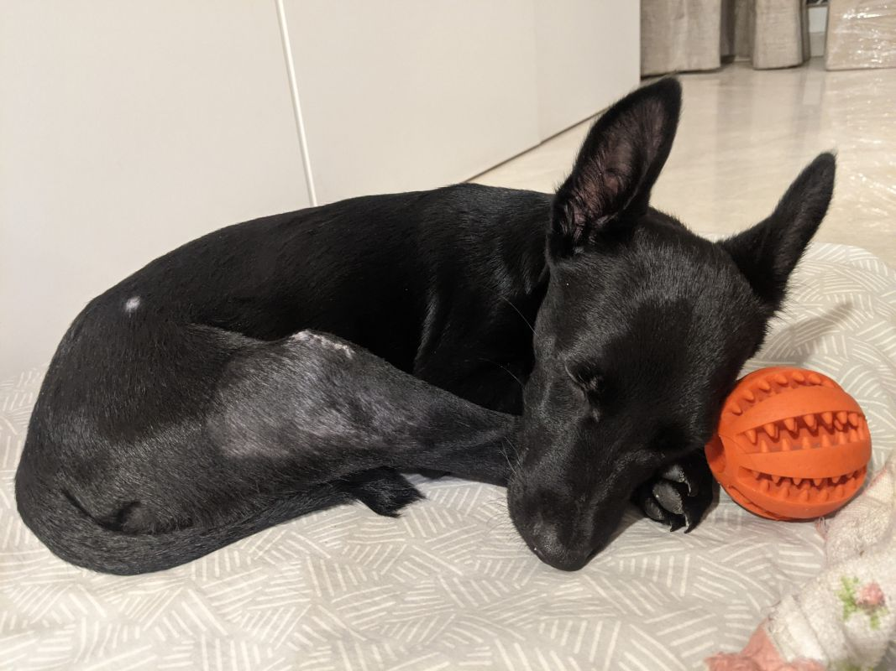Coming to today, Emma is staying with us for now and she is looking for a new home. She is totally out of danger and ready to grow up to be a super friend. Please find my contact details below for any enquiry.